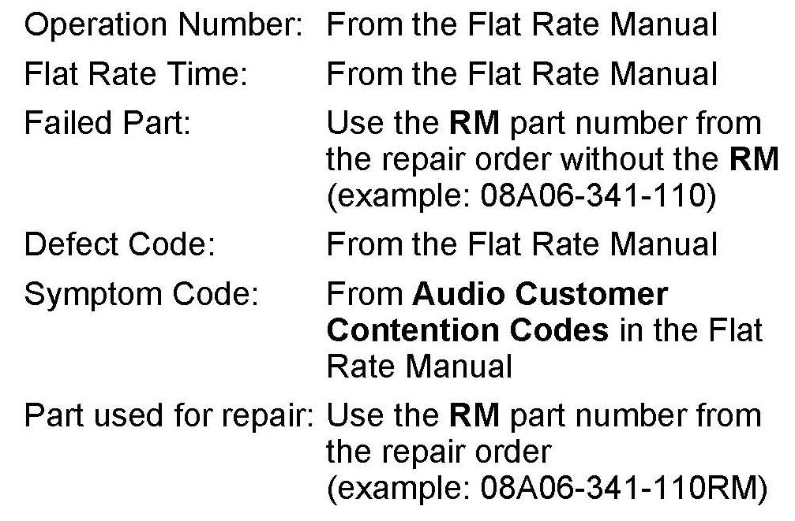
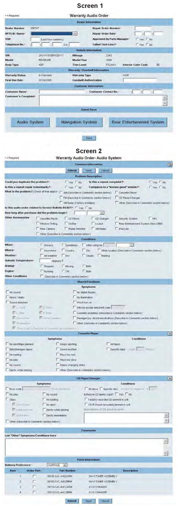
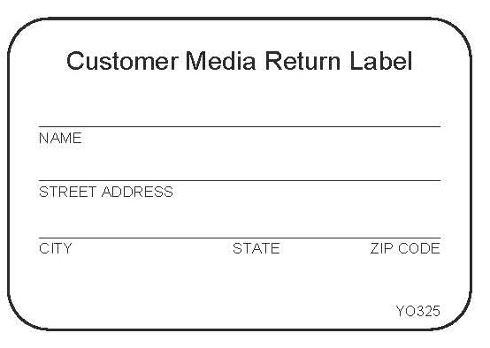
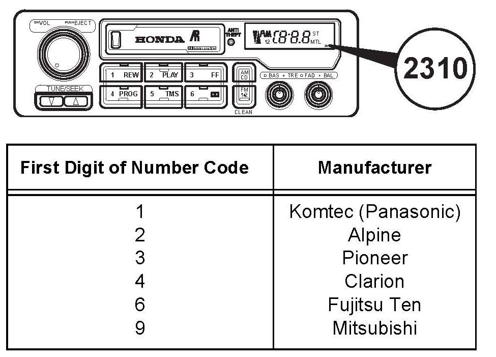
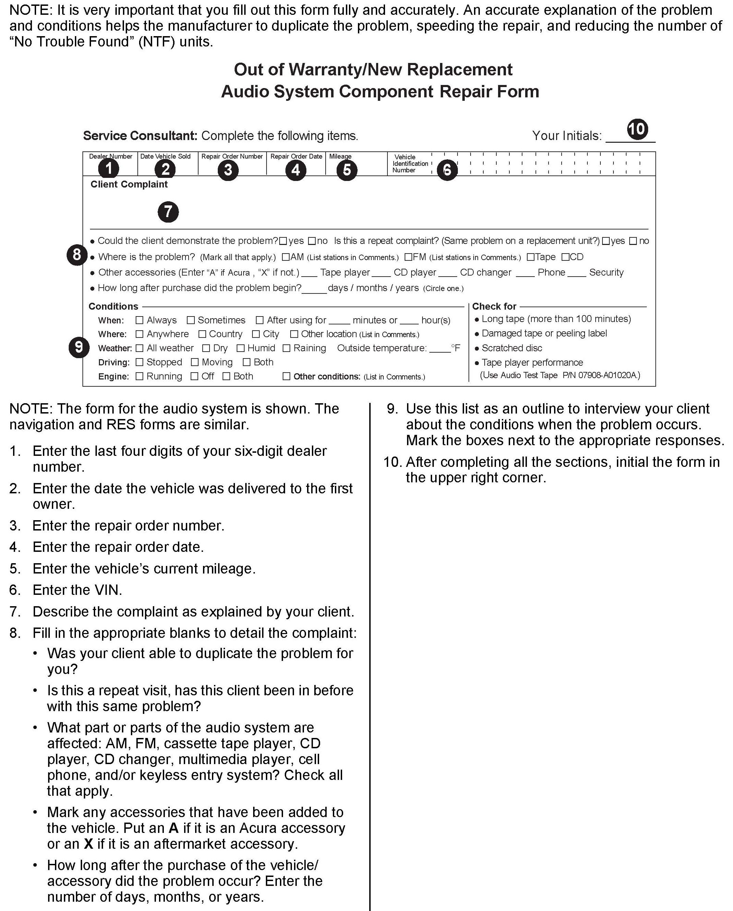
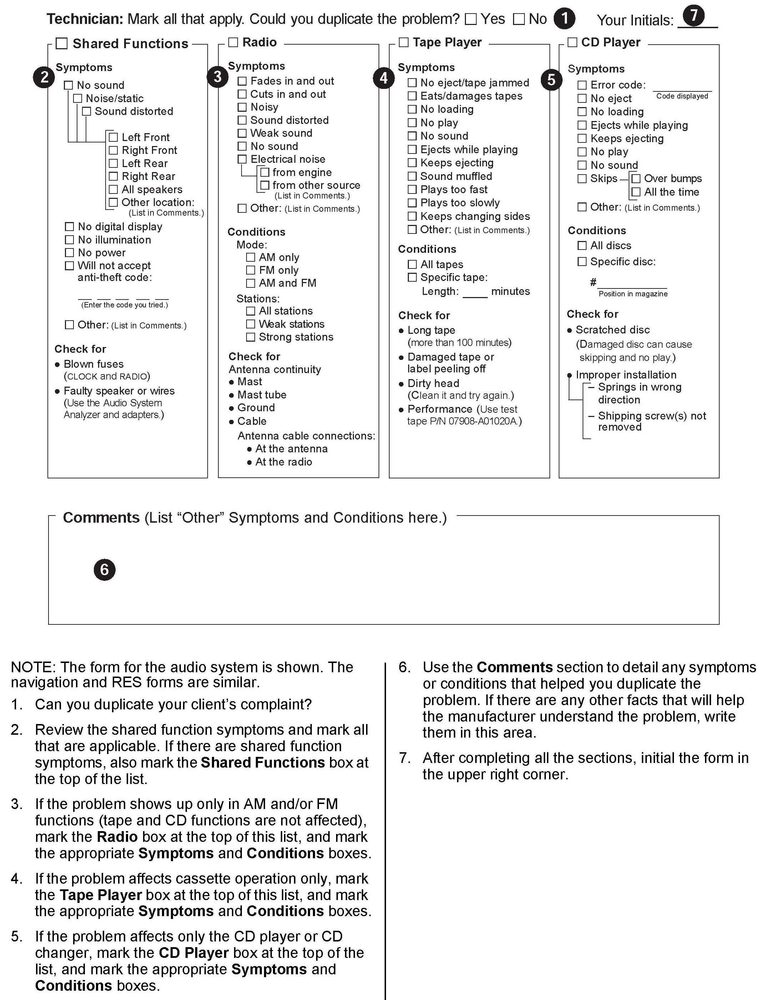
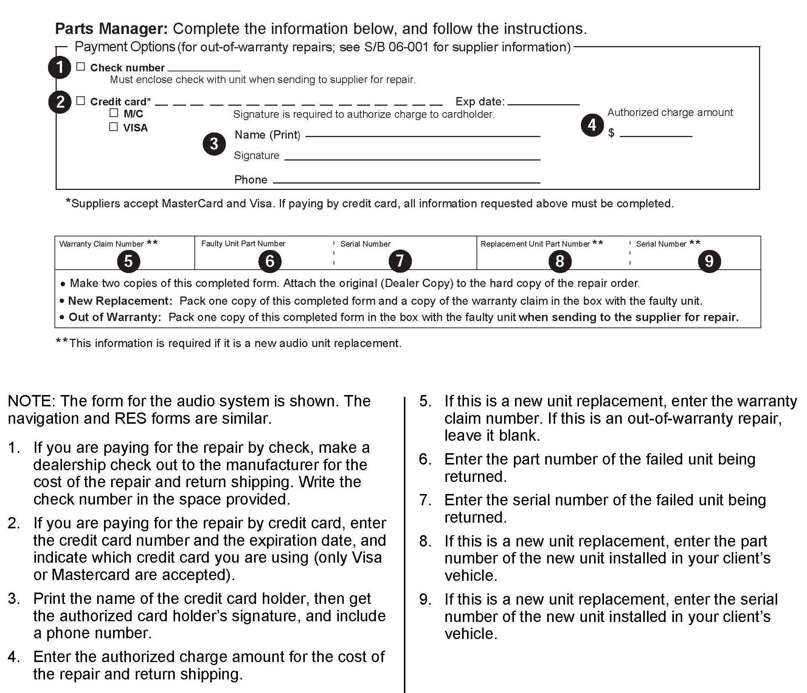

Audio, Navigation, RES - Warr. Exchange/Non-Warr. Repair
06-001April 9, 2013
Applies To:
1998 and Later Models - ALL
Audio, Navigation, and RES Unit In-Warranty Exchange and Out-of-Warranty Repair
(Supersedes 06-001, dated September 8, 2012, to revise the information marked by asterisks)
REVISION SUMMARY
*Under OUT-OF-WARRANTY REPAIR (AUDIO, NAVIGATION, AND RES UNITS PRODUCED IN 1998 OR LATER), a phone number was changed in step 9.*
COVERAGE
This bulletin applies to all Acura audio units, CD players/changers, cassette tape players, navigation units, and rear entertainment system (RES) units, both in warranty and out of warranty.
COMPONENT REPLACEMENT POLICY
Use only remanufactured components for warranty repairs on client vehicles. Follow the warranty information and procedures given in this service bulletin and in Parts Information Bulletin B06-0001, Audio, Navigation, and RES Unit Warranty Exchange Program.
^ Remanufactured audio, navigation, and RES units are not available for non-warranty repairs.
^ Use new components to repair new, unsold vehicles.
^ A new component may be used to repair a client's vehicle under warranty only if the remanufactured component is currently unavailable from American Honda.
^ You must receive authorization from your District Parts and Service Manager (DPSM) before ordering a new component.
^ For vehicle service contract (VSC) and certified used car (CUC) repairs, call.
WARRANTY CLAIM INFORMATION

The normal warranty applies.
IN-WARRANTY DIAGNOSIS
Service Consultant:
1. Interview the client to get as much information as possible, such as where and when the problem occurs. This information is vital in helping you determine if the audio, navigation, or RES system is operating normally or if a problem exists. Write the complaint on the repair order.
NOTE:
For CD/DVD-related problems, verify if the client used discs with adhesive labels.
Service Technician:
2. Print the appropriate system worksheet from an
Interactive Network (iN) workstation.
^ From the iN main menu, click on SERVICE.
^ Click on ISIS (Service Publications).
^ Click on Technical Library.
^ Select the model and the model year, then click on Job Aids.
^ Click on Audio System Worksheet, Navigation System Worksheet, or Rear Entertainment System Worksheet.
3. Duplicate and confirm the problem using the client information written on the repair order, or have the client demonstrate the problem. Write your results on the worksheet.
Using the SYMPTOM TROUBLESHOOTING INDEX or the DTC INDEX (if applicable) in the applicable service manual, find the symptom that matches the client's complaint, and follow the diagnostic procedure:
^ Refer to the appropriate section in the service manual, or
^ From the iN main menu:
- Click on SERVICE.
- Click on ISIS (Service Publications).
- Click on SEARCH BY VEHICLE.
- Select the model and model year, and enter keyword AUDIO, NAVI, or RES, and the DTC (if applicable).
- Select the appropriate service bulletin, ServiceNews article, or symptom troubleshooting from the list.
4. Repair the vehicle according to your diagnosis, then confirm the repair by trying to duplicate the client's original complaint, or check to see if the DTC returns:
^ If the problem is gone, return the vehicle to the client.
^ If the problem is still there, go to step 5.
5. Replace the unit with a remanufactured unit:
^ For warranty repairs, go to the IN-WARRANTY EXCHANGE procedure.
^ For vehicle service contract (VSC) and certified used car (CUC) repairs, call.
^ For goodwill repairs, contact your DPSM.
IN-WARRANTY EXCHANGE
Service Technician:
NOTE:
^ Use the iN to order a remanufactured audio, navigation, or RES unit. Do not call the Remanufactured Parts Dealer Service Group.
^ A Tech Line reference number is not required to submit the order. Check Yes, and enter the Reference Number only if there is a pre-existing Tech Line contact.
1. Go to an iN workstation. From the iN main menu, click on SERVICE, then Remanufactured Parts, then Audio Order.
2. Select the model, year, and keyword AUDIO, NAVIGATION, or RES, then click Search.
3. Review the publications applicable to the problem. If you cannot repair the problem, go to step 4.

4. Click on Audio Order. Enter the VIN and mileage, and click Submit to view the Warranty Audio Order form.
5. Use your completed system worksheet to help you answer the questions on the Warranty Audio Order form.
Screen # 2 of the form contains the problem description, condition information, and shared functions. Fill this section out with as much information as possible. Select one part number from the list provided, then click on Submit. It is your responsibility to ensure that the correct part number is selected based on color and application information.
NOTE:
Once you submit your order, you can track it using the Warranty Audio VIN Inquiry screen on the iN. For details, see WARRANTY AUDIO ORDER PROGRAM FREQUENTLY ASKED QUESTIONS.
6. You will receive a remanufactured unit packed in a reusable shipping box. Save this box and the packing materials.
You must return the failed core in this box. Otherwise, your dealership risks being billed a core loss charge, ranging from $800 to $2,500, depending on the unit.
7. Remove the failed audio/navigation/RES unit:
^ Refer to the appropriate component section of the service manual, or
^ Online, enter keyword AUDIO, NAVI, or RES. Select the appropriate removal procedure from the list.
8. Install the remanufactured unit:
^ Refer to the appropriate component section of the service manual, or
^ Online, enter keyword AUDIO, NAVI, or RES. Select the appropriate installation procedure from the list.
9. If the remanufactured unit has a shipping cover and shipping screws, make sure you transfer them to the failed unit being returned. Also be sure to transfer all the mounting brackets to the replacement unit. Failure to do this may result in dash squeaks and rattles.
NOTE:
If the client's media (CD, CD magazine, DVD, DVD-A, cassette tape, etc.) is stuck in the unit, leave it there for these reasons:
^ The manufacturer needs it for diagnosis and testing.
^ Any failed core that is returned disassembled is considered an unusable core. Client media (CDs, CD magazines, DVDs, DVD-As, cassette tapes, etc.) will be properly removed by the supplier at the point of tear down and inspection of the failed unit, and mailed to your dealer.
Make sure the failed core is not disassembled! If the core is disassembled, your dealership will be debited a core loss charge ranging from $800 to $2,500, depending on the unit.
10. Put the failed core in the same box that the remanufactured unit came in.
NOTE:
If you do not return the failed core in this same box, your warranty claim will be debited and the core will be sent back to your dealership.
Parts Manager:
11. The Warranty Audio Order form you submitted stays on the iN for 60 days. Print a copy to put in the box with the core:
^ From the iN main menu, click on SERVICE.
^ Click on Transactions.
^ Click on Search, and enter a date range.
^ Click on Filtered by Service.
^ Under Transaction Description, click on Audio Order, then go back to the top of the page and click on Search.
^ Scroll down to the appropriate VIN, then select it to view the form.
^ Review the form, then click on the printer icon.
12. Print a copy of the Core Return Update Acknowledgement to put in the box with the core:
^ From the iN main menu, click on PARTS.
^ Click on Returns and Surplus.
^ Click on Core Returns.
^ Select the appropriate VIN to view the Core Return Acknowledgement screen.
^ Review the form, then click on the printer icon.
13. Put the Warranty Audio Order form and the Core Return Update Acknowledgement into the core return box with the failed core.
NOTE:
If you return a failed core without the proper forms, your warranty claim will be debited and the core will be sent back to your dealership.
14. Ship the failed core to the appropriate location by using the prepaid shipping label that came with the remanufactured unit.
NOTE:
For information on penalties for returns after 30 days, see PIB B06-0001, Audio, Navigation, and RES Unit Warranty Exchange Program.
WARRANTY AUDIO ORDER PROGRAM FREQUENTLY ASKED QUESTIONS
Question: When do I use the warranty audio order program?
Answer: Use the program when you are replacing an audio, navigation, or RES unit under warranty (including goodwill) that has an internal failure.
NOTE:
The client's media (CD, CD magazine, DVD, DVD-A, cassette tape, etc.) is removed by the supplier at tear down and inspection of the failed unit and mailed to your dealership.
Any failed audio/navigation/RES unit core that is returned disassembled is considered an unusable core, and your dealership will be issued a core loss charge ranging between $800 and $2,500.
Remanufactured audio/navigation/RES units are not available for non-warranty repairs.
New components should be used to repair new, unsold vehicles.
A new component may be used to repair a client's vehicle only if the remanufactured component is currently unavailable from American Honda.
Your DPSM must authorize ordering a new component.
Question: How do I order a remanufactured audio, navigation, or RES unit?
Answer: For a warranty replacement, see IN-WARRANTY EXCHANGE.
For a goodwill repair, contact your DPSM.
For a non-warranty repair, see OUT-OF-WARRANTY REPAIR.
Question: What if it is a VSC or CUC replacement? Answer: For vehicle service contract (VSC) and certified used car (CUC) repairs, call.
Question: Who do I call for questions on the warranty audio order program?
Answer: For administrative questions, call the Remanufactured Parts Dealer Service Group.
Question: Who do I call if I need help diagnosing the problem or if I have technical questions about the unit?
Answer: If you cannot find the answers in the appropriate service manual, service bulletins, or ServiceNews articles on iN, create a Tech Line access code, then call Tech Line:
1. From the iN main menu, click on SERVICE.
2. Click on ISIS (Service Publications).
3. Click on Search by Vehicle.
4. Select the model and year, and enter keyword AUDIO, NAVI, or RES, then click Search.
5. Review the displayed publications. If you cannot find the answer in any of these publications, click on Tech Line Help.
6. The Tech Line access code screen appears. Fill in all the required fields, then click on SUBMIT.
7. Call Tech Line at 800-228-7210. Have the access code ready.
Question: Do I need a Tech Line reference number to order a remanufactured audio, navigation, or RES unit?
Answer: No.
Question: What year and model audio/navigation/RES unit can I order through the warranty audio order program?
Answer: Most current models are available through the vehicle's standard warranty period. If your application is not available, you will receive a message instructing you to call the Remanufactured Parts Dealer Service Group.
Question: How can I track my order once I submit it?
Answer: To track your order, go the Warranty Audio Order VIN Inquiry screen on the iN.
1. From the iN main menu, click on PARTS.
2. Click on Parts Ordering.
3. Click on Order Status Inquiry.
4. Enter a date in the All Orders Accepted Since box, select Order Status Inquiry for Cores/VIN, then click on Submit.
The Order Status Inquiry Acknowledgement screen appears, listing orders by Reference No, Core Type, VIN, Shipper, Ship Date, Qty, Reman Serial No, Status, and Techline Ref No.
The status of your order is displayed by one of these codes:
Codes generated by RPO Tech Line:
^ PEND - Your order is waiting to be processed by RPO Tech Line.
^ HOLD - Your order is waiting for additional dealer diagnosis.
^ ERR - Your order caused an error; call.
^ DENY - RPO Tech Line denied your order call.
^ APPR - RPO Tech Line approved your order and forwarded it to AHM Parts.
Codes generated by AHM Parts Operations:
^ BO/TOS - Your order is on back order or is temporarily out of stock.
^ CAN/BOC - Your order has been cancelled contact your assigned parts center.
^ ALO/BOA - Your order has been allocated, but not released for shipment.
^ REL/BOR - Your order has been shipped.
^ INV - Your order has been invoiced to your dealer parts account.
If you see an AHM Parts Operations status code not listed above, contact your facing parts center analyst.
CORE RETURN INFORMATION
Service Technician:

1. If the client's media (CD, CD magazine, DVD, DVD-A, or cassette tape) is stuck inside the failed unit, fill out a Customer Media Return Label (reorder number Y0325), and attach it to the unit. The manufacturer will remove the media, and mail it back to your dealership.
2. Use the prepaid shipping label. Each audio supplier provides a prepaid shipping label with the remanufactured audio unit.
Return the core using this label to ensure that it is received at the appropriate location for credit. Use the prepaid shipping labels to return audio cores to authorized locations only; do not use them for any other purpose. If you need additional prepaid shipping labels, contact Remanufactured Parts Operations.
^ Complete the shipping label with your dealership information.
^ Pack one audio unit per box, and use a separate shipping label for each one.
^ On the line requesting Your Internal Reference Information, enter YOUR DEALER NUMBER and the WARRANTY CLAIM NUMBER.
3. On the repair order, write down the warranty claim number, the original part number, the serial numbers from both the failed and remanufactured units, and the return tracking number.
4. Ship the failed unit in the same box the remanufactured unit came in. Make sure you include this required paperwork:
^ A copy of the Core Return Update Acknowledgement from the iN.
^ A copy of the Warranty Audio Order form from the iN.
NOTE:
When the failed unit arrives at the remanufacturing center, your warranty audio order will be updated to indicate that the core was received. For information on penalties for returns after 30 days, see PIB B06-0001, Audio, Navigation, and RES Unit Warranty Exchange Program.
OUT-OF-WARRANTY REPAIR (AUDIO, NAVIGATION, AND RES UNITS PRODUCED IN 1998 OR LATER)
NOTE:
^ If you are making a repair or exchange because of a service campaign, do not use OUT-OF-WARRANTY procedures. Refer to IN-WARRANTY EXCHANGE for more information.
^ For Client-Pay Remanufactured Audio Program information, see PIB B12-0003, Client-Pay Remanufactured Audio Program.
Service Consultant:
1. Work with the Parts Manager to contact the manufacturer for a repair cost estimate, plus shipping, before sending them the failed unit. Then, give your client a copy of the estimate for removing and replacing the unit, the shipping cost, and the cost for repairing the unit.
2. Obtain an Out-of-Warranty/New Replacement component repair form, and complete the Service Consultant's section. To obtain the form, do this:
^ In ISIS, click on Technical Library, select the model and year, then click on Job Aids.
^ Select the applicable form from the list, and print it out:
- Out-of-Warranty/New Replacement Audio System Component Repair Form
- Out-of-Warranty/New Replacement Navigation System Component Repair Form
- Out-of-Warranty/New Replacement Rear Entertainment System Component Repair Form
Service Technician:
3. Remove the failed unit:
^ Refer to the appropriate component section of the service manual, or
^ Online, enter keyword AUDIO, NAVI, or RES, and select the appropriate removal procedure from the list.
NOTE:
If the client's media (CD, CD magazine, DVD, DVD-A, cassette tape, navigation DVD, etc.) is stuck in the unit, leave it there. The manufacturer will remove and return it.
4. Complete the Technician's section of the Out-of- Warranty/New Replacement component repair form.
Parts Manager:
5. Complete the Parts Manager's section of the Out-of-Warranty/New Replacement component repair form. Make sure you include your name, department, and dealership phone number on the form.

6. Identify the manufacturer. Units sent to the wrong manufacturer may not be shipped back within the usual 5-7 days.
^ Look for the number code on the face of the unit.
^ If the unit has no number code on its face, check the label on the unit housing, and compare the first two or three letters of the radio reference number (or audio unit model number) to this list:
Alpine - BN, BB, HF, MF, MN, BV, RD, RG, BN, FAH, MU, CD, CM, MC, MD, MT, MF
Clarion - PH
Fujitsu Ten - CE, SD
Panasonic
- Audio: CAH, CO, CR, RM
- RES Display: CY, CN, CV, TR, CX, CY
- DVD Player: CN, CX
Pioneer-AV, CD, DE, DV, FHM, FX, GE, KEH
Mitsubishi
- RES Display: ED
- DVD Player: DV
If you still can't locate the radio reference
number or audio unit model number, call
Remanufactured Parts Operations.
7. Complete the required paperwork:
^ If you are paying by credit card (Visa or
MasterCard only): Fill in these fields on the
component repair form:
- Credit card number
- Credit card expiration date
- The name as it appears on the credit card
- Signature (authorized card holder)
- Phone number
- Authorized charge amount
NOTE:
If you send in a failed unit without a check, with a check listing the wrong estimated amount, or with incomplete credit card information, the manufacturer may send it back to you unrepaired, or they may repair it and send it back to you C.O.D.
^ If paying by check: Make a dealership check out to the manufacturer for the cost of repair and return shipping. Make sure to include the check number on the form.
NOTE:
For all Panasonic products, make your check out to Komtec Electronics. For all products sent to Clarion Factory Service Center, make your check out to Clarion.
^ Print two copies of the completed Out-of-Warranty/New Replacement component repair form. Keep one copy with the repair order, and include the other copy with the failed unit when you send it to the manufacturer.
8. Carefully pack the failed unit and the paperwork in a suitable box, and label the box clearly. You are responsible for lost or damaged units; keep all shipping documents and insurance receipts.
9. Ship the failed unit to the appropriate manufacturer via UPS.
Alpine Electronics of America
c/o Standard Radio Engineering Corp.
2012 Abalone Ave., Unit D
Torrance, CA 90501
800-421-2284, Ext. 860304
Bose Corporation
Automotive Systems Division-Service
Framingham, MA 01701-9168
800-231-2673
Clarion Factory Service Center
241 Beaver Rd.
Walton, KY 41094
800-347-8667
(Make checks payable to Clarion)
Fujitsu Ten
19600 S. Vermont Ave.
Torrance, CA 90502
800-237-5413
FTH Group Inc. (Kenwood Accessory Parts)
16685 E. Johnson Dr.
City of Industry, CA 91745
626-333-2435
(You must get an RMA authorization number
from www.fthgroupinc.com; from the home
page, select Consumer Products)
Komtec Electronics (Panasonic)
7221 Orangewood Avenue
Garden Grove, CA 92841
714-903-3300
(Make checks payable to Komtec Electronics)
Mitsubishi Electric Automotive America, Inc.
15603 Centennial Drive
Northville, MI 48168
*734-455-4622*
Pioneer Electronics Service, Inc.
1925 E. Dominguez St.
Long Beach, CA 90801
800-553-3756
Visteon
c/o Model Electronics
615 E. Crescent Ave.
Ramsey, NJ 07446
800-433-9657
(Visteon offers an open line of credit. Call their
800 number to establish an account.)
NOTE:
^ The manufacturer will repair the unit and ship it back within 5-7 working days, via UPS ground prepaid or 2nd Day Air (whichever you requested). Do not forget to include the shipping cost in your dealership payment. Units damaged by misuse or mishandling cannot be shipped back within the usual 5-7 days.
^ Each manufacturer's guarantee for the repair differs. To confirm the repair guarantee, contact the manufacturer using the phone number listed above.
10. To check on the status of your repair order, call the manufacturer.
NOTE:
A damaged unit may need extra repair. If so, the manufacturer will call you with an estimate of any added charges.
^ If you accept the estimate, either authorize the increased amount to be applied to the credit card payment, or mail a dealership check for the additional amount to the manufacturer, or have the manufacturer ship the unit back to you, and you pay the difference upon arrival (C.O.D.).
^ If you reject the estimate, the failed unit will be returned to you along with a refund. However, you will be charged $30.00 (C.O.D.) for diagnosis, shipping, and handling. The unit will be shipped back to you, via UPS Ground.
If your client has any further questions or concerns, have them call Acura Client Relations.



COMPLETING THE OUT-OF-WARRANTY/NEW REPLACEMENT AUDIO SYSTEM COMPONENT REPAIR FORM

Disclaimer